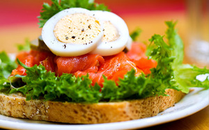
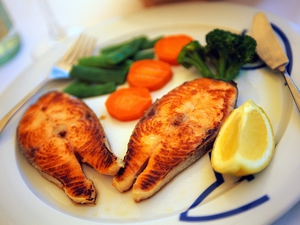
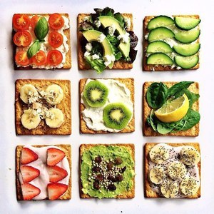
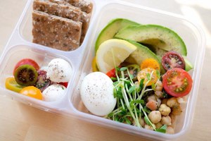
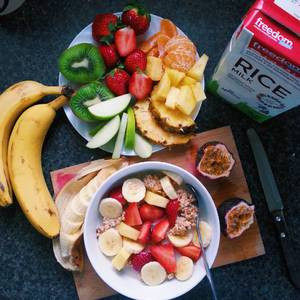

Proper nutrition: food and healthy recipes PP for Breakfast, lunch and dinner for each day, photos
Well, if all members of the family decided to move to a proper and healthy diet, as even a few months can be a pleasure to see the amazing changes in health, appearance, attitude and improvement in their own lives. Of course, in the early stages will be with terrible force to pull on salinity, harmful sweets and meats, while sometimes not because you really want, but only for the reason that it is very «sweet forbidden fruit.»
What to do, so people arranged. But even when you are very easy to give up the forbidden pleasures, after all it is necessary to work over that previously drawn up a rough menu of healthy nutrition pleased you such dishes that are quick and easy to prepare, but at the same time retain the maximum benefits of all products and have excellent taste properties.
Breakfast with proper and healthy nutrition
 Nutritionists in one voice at Breakfast, eat cereals – they are rich in micronutrients, minerals and vitamins as well as nutritious and filling. But you must admit – to eat for Breakfast is the same dish, even if made from different cereals, bored.
Therefore try to vary the Breakfast, making traditional porridge unusual and original, or completely change them into other dishes.
Recipes for Breakfast every day
Porridge of wheat berries. Recipe
Boil one Cup of washed millet in 0,5 l of boiling milk about half an hour on small fire. Do not forget to stir. Then give the porridge a bit to steep, taste, add a little honey and sea salt, and served with ice cream or fresh berries. You can also choose jam or fruit jam.
Oatmeal with kiwi and banana. Recipe
For faster cooking, perfect Hercules, it can be cooked is cooked for 5 minutes is ready and present porridge add kiwi and banana, cut into chunks. That’s the whole recipe for Breakfast.
Fruit pudding. Recipe
Quite gentle and nice Breakfast at the same time very rich in vitamins. To prepare the pudding using 3-4 all types of fruit (not very hard), grind them in a blender, add chopped nuts and some eggs, whipped with a small amount of salt and sugar. Stir the mixture and bake for 6-9 min.
Scrambled eggs with cheese. Recipe
Scrambled eggs for Breakfast – the eternal classic of the former Soviets, but we can do something original. For example:
- lay the bottom of the pan with pieces of cheese;
- you put the pieces of tomatoes;
- add greenery;
- pour the composition of beaten eggs and milk.
Bake the omelet in the oven for 6-9 mins Very helpful, nice and tasty.
Casserole of cheese. Recipe
Some people don’t like cheese, but in casseroles and cheesecakes this product eaten for a sweet soul. Because you can make this dish: mix 450-550 gr. low-fat cottage cheese, add some eggs, 3-4 tablespoons of sugar and a tablespoon of semolina. This mixture is baked in the microwave or the oven 9 minutes, you Can add the cinnamon, vanilla, pieces of dried fruit.
Meals with proper and healthy food for every day
 Traditionally, meals consist of first and second dishes, and a salad. While proper nutrition first food is best to do without frying, main dishes, it is desirable to put out, bake or steam (grilled is also possible), and in salad dressings mayonnaise it is desirable to replace fat-free sour cream, and vinegar with lemon juice. Given the basics of good nutrition, diet dinner can include such dishes.
The first meals with proper nutrition. Description and recipes
What to do at first, when the usual chicken noodle and borscht has become boring?
Bean soup beans in Greek. Recipe
You will need:
- one carrot;
- 120-160 gr. vegetable oil;
- one bulb;
- 1/4 of celery root;
- Cup of beans;
- 3-4 tbsp tomato paste;
- a few cloves of garlic.
Beans to pour the water, bring to boil and pour the liquid. After again, fill the beans with water and boil 5-6 minutes, then switch off the stove and infuse the broth for hours. Then add the finely chopped vegetables: celery, carrot and onion at the same time with tomato paste and garlic, then cook for about 25 minutes (until the vegetables are ready). Add black pepper and salt.
Soup-puree of tomato. Recipe
This summer soup is the way, during the holidays when it is hot and there is absolutely no desire to be near the stove. And here – take a kilo of tomatoes we scald, remove skins, cut in half and remove seeds. After just mix in a blender the remaining pulp is ground with 2 teeth of garlic, 2 tablespoons olive oil, 2 tbsp lemon juice and a small amount of nutmeg, thyme and Basil and black pepper and add salt to taste.
Mushroom soup with lentils. Recipe
First soak for a few hours 120 gr. dried porcini mushrooms. Then fill them with several litres of cold water and bring to a boil, cook a quarter of an hour. Then add 220 gr. washed lentils and allow to cook for another 30 min. Separately it is necessary to apply the onion in oil and a few finely chopped carrots. Add one chopped potato and sauteed vegetables to the broth, boil all until tender. For a few minutes before the end of cooking, put the cilantro, Bay leaf, salt. Served with greens and low-fat sour cream.
Kholodnyk. Recipe
This soup is quite useful and is the best fit for the warmer season. 1 cook the beets and four eggs. Grind grated 1 small cucumber, beets and eggs. Add chopped green onions and dill, add 750 ml of yogurt and salt to taste.
The soup in the pot. Recipe
Cooking pot for baking is a pleasure, because our main goal is just to put everything necessary in the container, and then the case for an oven. Typically, these meals are made on the eye, because orientirueshsya need to focus on the number of people in each pot put a piece of chicken or meat, chopped vegetables – carrots, onions, broccoli, cabbage, bell pepper, potatoes, that is what is at hand. Fill with water, add pepper, salt and spices, a bit of Bay leaf and put on 2 hours in the oven.
Second course with proper nutrition
As a rule, those dishes served on the second, even to act as dinner, but for dinner they are best supplemented by some salad greens or just bell peppers, sliced cucumbers.
Dinner with proper nutrition. Description and recipes
Potatoes in a pot and chicken. Recipe
This is a gorgeous simple dish turns out so beautiful and delicious that is worthy and a celebratory feast. For 4 serves you will need:
-  450 gr. chicken;
- 0.5 kg of potatoes;
- 4 medium tomatoes;
- 450 gr. mushrooms;
- Lean mayonnaise or sour cream;
- 320-450 grams. cheese;
- Greens;
- Pepper, salt, and spices.
All components are equally cut slices. Cream lubricates the bottom of the pots, lay the fillets in the beginning, after the mushrooms, a little bit of sour cream, then potatoes, tomatoes and sour cream again. Liberally pour on top of cheese. Unforgettable pepper and salt. And then put the pots in a hot oven for about an hour.
Fish stew with vegetables. Recipe
For this, easy to prepare meals, we will need 0.5 kg of fish fillet, which cut into cubes, 35 oz. carrots, shredded, 250 grams. onion cut into half rings, 3 tbsp. tomato paste, pepper and 4 Bay leaves.
At first together with tomato paste simmer in vegetable oil carrots and onions. After 15 minutes add the fish fillet, spices and 0.5 l of hot water. Cover with a lid and simmer for another 45 min.
Baked chicken breast with Apple and vegetables for the holiday table. Recipe
Two servings of the finished dish will need 300 gr. chicken breast, 2 small potatoes, 250 grams. broccoli, egg whites, 2 apples, vegetable oil, green onions, 2 tbsp sour cream, and Apple — honey, 1 tbsp nuts and raisins.
Breast obviam in protein and bake at 190 degrees for about half an hour. The potatoes also need to bake with sour cream and vegetable oil, and broccoli to cook for a couple. The apples cut out the core and fill with nuts, honey and raisins, then bake in the oven for 50 minutes the Dish is served in a deep dish and sprinkle with green onions.
Eggplant with tomatoes and cheese. Recipe
For this dish you will need two eggplants, garlic cloves and tomato, a few spoons of olive oil and a mixture of Italian.
In a baking dish spread layers cut into 10 mm thick eggplant after tomato (5 mm thick) on top sprinkle the vegetables with oil, add spices and crushed garlic. Now you need a dish to bake in the oven for about 1 hour, and before serving, sprinkle ground herbs and cheese.
Spaghetti with broccoli and shrimp. Recipe
 For 2 servings of this useful and dietary dishes, we need 270 gr. broccoli, 1 onion, 250 gr. spaghetti 300 gr. shrimp, 4 tsp of olive oil and two cloves of garlic.
Broccoli divide into florets and boil for 15 minutes, then divide into even smaller florets. Clean the shrimp and bring to a boil, then set aside. In heated olive oil passeruem finely chopped onion until Golden, then add garlic, after a few minutes – the broccoli and a little bit of broth, boiled cabbage where the composition resembled a sauce.
Cook spaghetti just before serving the dishes, immediately cover with the sauce from the broccoli and put shrimp in the middle of the plate.
Salads for lunch and dinner
Salads and snacks play an important role in proper nutrition, and making up for a month a healthy diet, you need to certainly try to include salads, a variety of seasonal fruits, vegetables, and fruits. Incidentally, fruit salads come to the rescue and well as an addition to the dinner, and second dinner.
Greek salad. Recipe
A great addition to a summer or spring lunch. Just cut large cubes of cucumbers, tomatoes and feta cheese, put the olives and dressed with lemon juice, salt and olive oil. Also don’t forget the lettuce, it is desirable to break it. Onion added to taste.
Spring salad of cucumber, carrots and beets. Recipe
Is simply prepared, tastes great, and lots of vitamins!
Simply grate a small cucumber, the same size boiled beets and carrots weighing 120 gr. Add a little salt, vegetable oil, balsamic vinegar and sugar and immediately served to the table, because the vegetables are pretty quick to create juice.
Salad with nuts, carrots and radish. Recipe
Due to the walnuts this salad is very nourishing. Cut into julienne carrots and radish, add ground nuts (4 teaspoons is enough), the lemon zest and finely chopped garlic clove, season the beaten vegetable oil, lemon juice, salt added to taste.
Avocado salad with almonds. Recipe
 It is also quite healthy and hearty salad, especially for our skin.
Finely chop one avocado, lettuce, 2 bell peppers (yellow or red). Mix in a salad bowl, toss with fresh chopped dill, add a few tablespoons of olive oil and add grinded almonds on top.
Salad with cheese «Gourmet». Recipe
To make this vitamin and delicious salad will take 150 gr. cucumber and celery, peel and cut cubes. Also cut two boiled eggs and grate 70g. cheese. Tucked in low-fat sour cream, add the garlic clove, garnish with dill, pepper and salt.
If you do not know how to diet proper and healthy diet every day, as well as to diversify the menu, I hope that with these recipes, the task is significantly simplified. Now you can prove to your relatives that diet and proper nutrition can be extremely tasty.
Healthy food recipes for each day